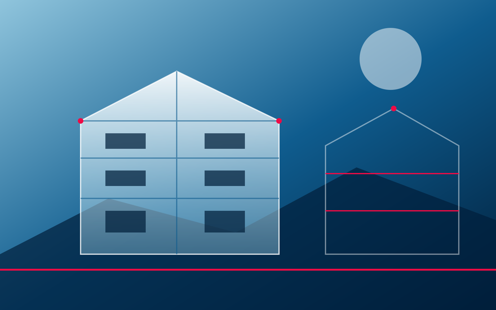
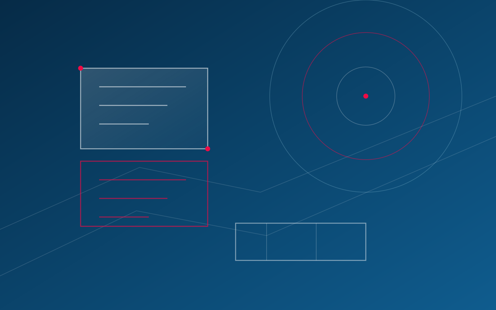
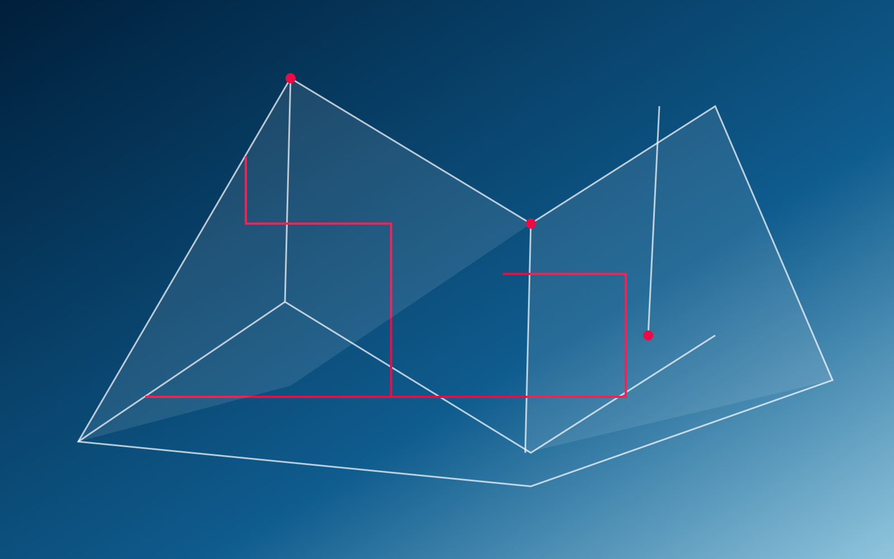
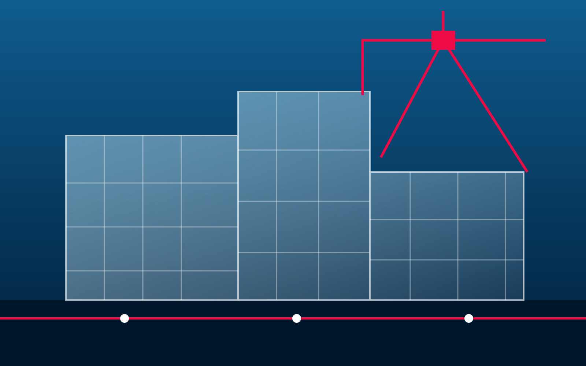

Maison Koubia.
Une résidence pensée pour durer, avec des choix clairs et une présence attentive à chaque étape.
↓ En bref→

01 — 04
Résidentiel · Niamey
Un lieu de vie juste.
La Maison Koubia rassemble une conception attentive, une structure suivie et des espaces pensés pour le quotidien. Belle House accompagne le projet de la première esquisse à la remise des clés.
- Type de prestation
- Conception & construction
- Interlocuteur
- Belle House Niger
- Maître d'ouvrage
- Client privé
- Architecte
- Équipe Belle House
- Localisation
- Niamey
- Pays
- Niger
- Année de réalisation
- 2026
- Surface du bâtiment
- Sur mesure
Pour ce projet résidentiel, les priorités ont été posées dès le départ : une circulation fluide, une lumière naturelle maîtrisée et des matériaux capables de bien vivre avec le climat de Niamey. Le suivi régulier permet de garder les choix visibles et d'avancer avec sérénité.


